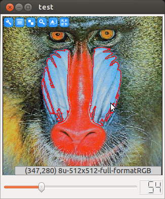

Visualization and Mouse Interaction¶
In this part we will learn how synchronize GUI interaction, visualization and image processing. Let’s risk a more complex task:
We implement an application that allows for picking a reference color using mouse input. The reference color is then used to create a binarized color distance map, that is used as input for blob detection. Finally, result regions are highlighted graphically.
|

The left mouse button can be used to define a reference color. The slider defines the color threshold |
Step by Step¶
Again, let’s go through the source code in step by step manner. As usual, we the necessary headers are included.
#include <ICLQt/Common.h>
#include <ICLCV/RegionDetector.h>
#include <ICLFilter/ColorDistanceOp.h>
Declaration of global application data. This time we need an instance of type RegionDetector that initialized with parameters for to be detected image regions. The first 2 parameters define the minimum and the maximum number of pixels, the other 2 parameters define value range for detected regions. Since we search for white regions in the intermediate binary image, the range contains the value 255 only.
In addition, we instantiate a ColorDistanceOp, which gets an initial reference color and binarization threshold.
GUI gui;
GenericGrabber grabber;
RegionDetector rd(100,1E9,255,255);
ColorDistanceOp cd(Color(0,120,240),100);
Since we want to use mouse interaction, we create a very simple mouse handler function. MouseEvent::isLeft() returns true for left press- and drag-events. The MouseEvent-type provides information that is related to the visualized image. It’s getPos() method returns the image pixel position pointed at rather than widget or screen coordinates even if the image is scaled or zoomed. getColor returns the color of the pixel the mouse points to, which is here passed as new reference color to the ColorDistanceOp.
void mouse(const MouseEvent &e){
if(e.isLeft()) cd.setReferenceColor(e.getColor());
}
The initialization method has not changed much in comparison to the former example. Again, we initialize our GenericGrabber instance, and we create our GUI. Once the GUI is created, we can easily install mouse-handlers to Image(), Draw() and Draw3D() components for image visualization. We used a Draw() component here, that provides the ability for rendering overlayed image annotations.
void init(){
grabber.init(pa("-i"));
gui << Draw().handle("image")
<< Slider(0,200,30).handle("t").maxSize(90,2)
<< Show();
gui["image"].install(mouse);
}
The run-method is now more complex then before. However, the desired task can still be implemented without processing pixels manually. First, the current threshold is passed from the GUI slider to the color distance operator.
Since, we need to use the Draw() component of the GUI several times, we extract it. Each component has an associated handle class whose name is ComponentNameHandle.
The current image will also be needed twice: for visualization and for the processing. Therefore, we also remember this temporarily.
Now, with draw = I, the background image for the visualization is set. The DrawHandle can now be used as a drawing state-machine, where we can set a color and then draw primitives. All rendering commands are given in image coordinates. The rendering system will internally compute all necessary transformations to align the image and the overlay.
void run(){
cd.setThreshold(gui["t"]);
DrawHandle draw = gui["image"];
const ImgBase *I = grabber.grab();
draw = I;
draw->color(255,0,0);
Then, we basically nest all our image processing operators in a single line. The output of the ColorDistanceOp is passed to the RegionDetector which returns a set of detected image regions whose boundaries are then visualized with the Draw() component. Finally the draw->render() call swaps the rendering buffers internally and requests redrawing from the GUI thread.
std::vector<ImageRegion> rs = rd.detect(cd.apply(I));
for(size_t i=0;i<rs.size();++i){
draw->linestrip(rs[i].getBoundary());
}
draw->render();